The Finals × You
XYOU, Berghs
I explored how UX principles from the fashion and retail industry can improve the store and customization flows in the game THE FINALS, with a focus on usability, ethics and win-win outcomes for both players and the game.
- Deliverables
- UX Research, Store & Customization Flows, UI Design, Figma Prototype
- Duration
- 4 Weeks Over a Year,
Alongside Studies - Company
- Embark Studio
- Team
- Solo
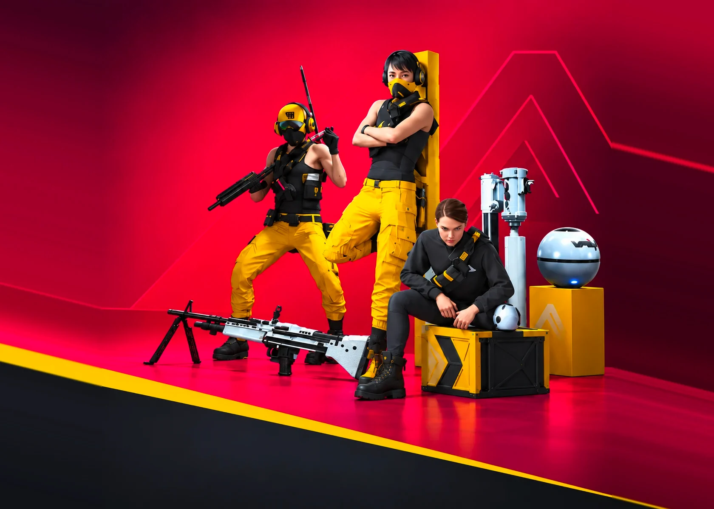
Presentation
The brief
XYOU is a course at Berghs School of Communication where students work on their own projects for a whole academic year, often together with a company. I worked with Embark Studio on their game THE FINALS.
How can THE FINALS make players feel a stronger connection to their contestant through a more intuitive customization experience?
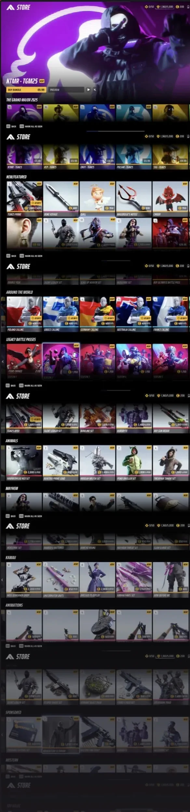
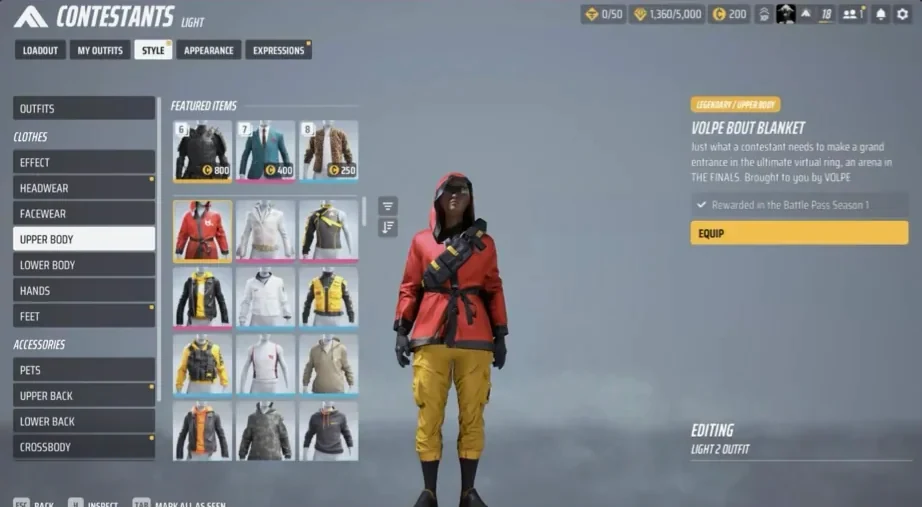
Research
I mapped how customization works in THE FINALS and other big shooters, and looked at fashion e-commerce for clear categories, visible filters and products shown in context. Online player feedback and five interviews pointed the same way: too much content at once, too much scrolling and too many menus.
Emotionally grounded — you feel rather than just shop.
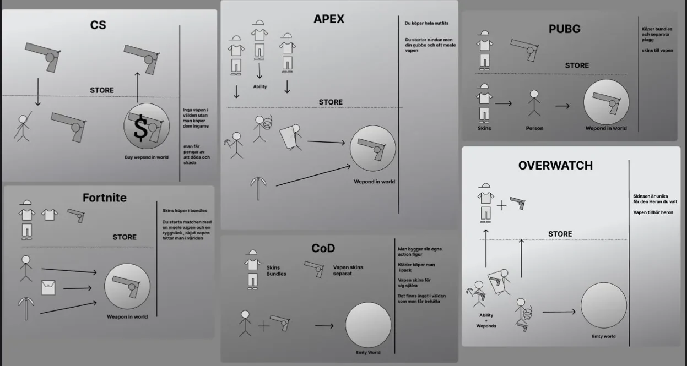
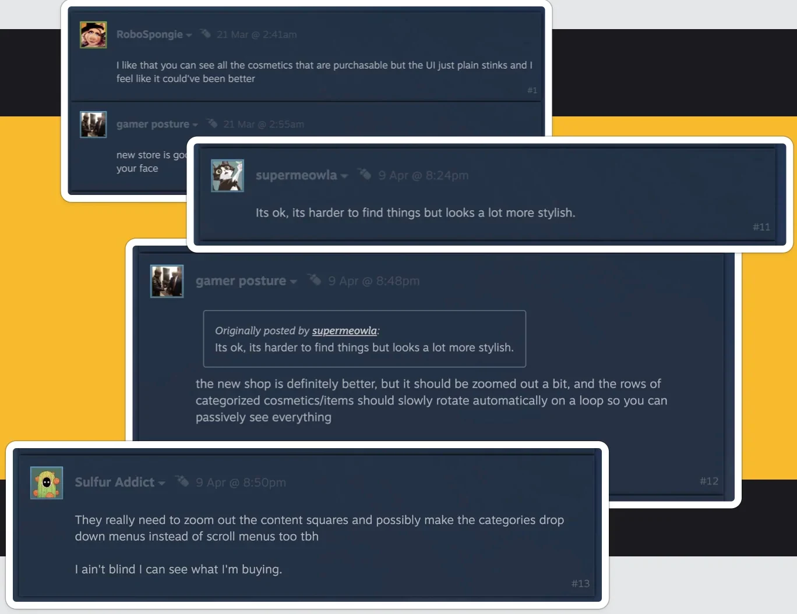
My solution
I moved the main navigation to the top and rebuilt the store entry around a rotating podium, inspired by physical retail: products on mannequins with their accessories, showing how they look in-game. A filter bar under the podium helps players quickly narrow down what they’re looking for.
Just like in a real store, you’re welcomed by products meant to inspire you and make you want to buy them, and the idea was built from there.
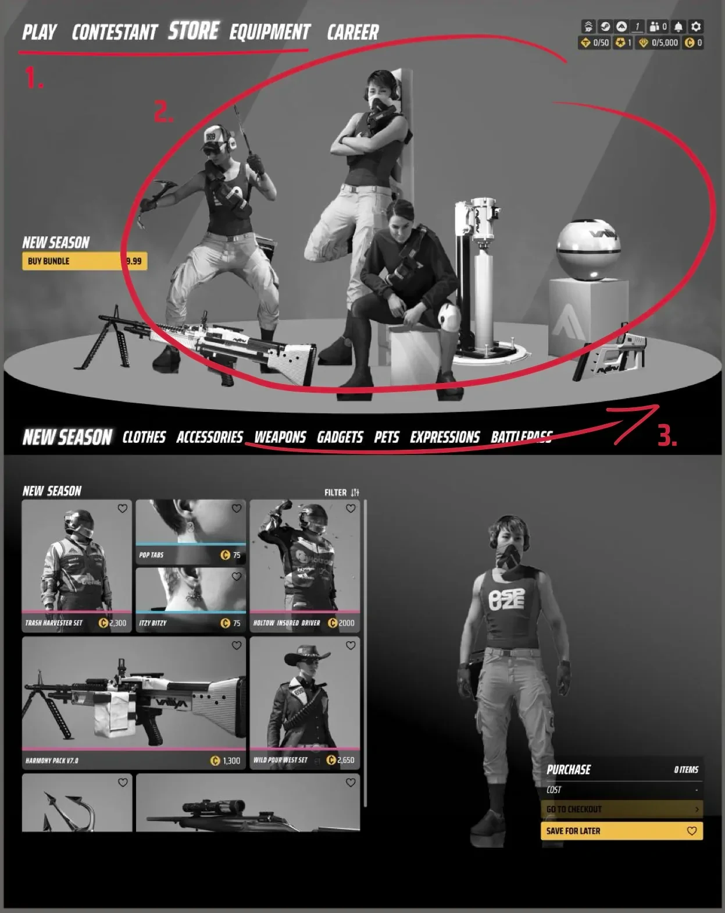
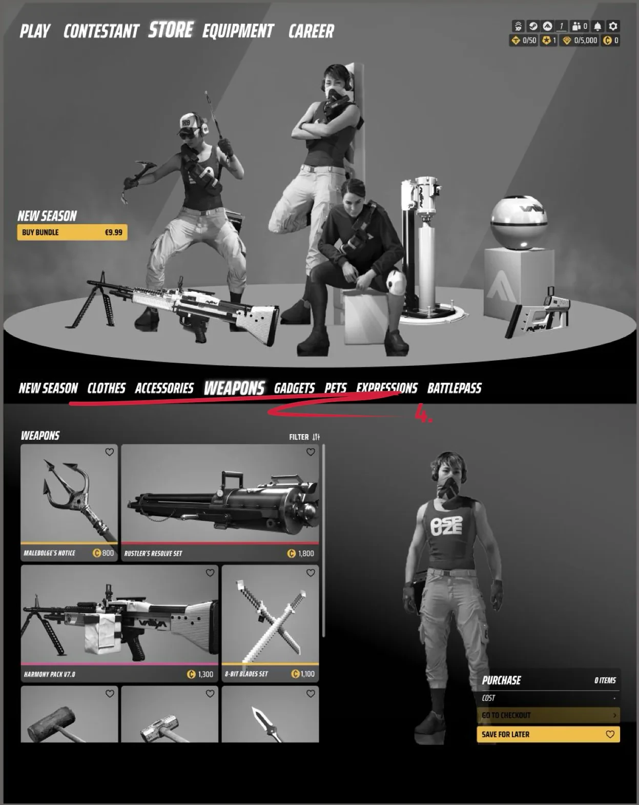
Player and product, together
The player’s contestant stays visible next to the products, and items in the cart are applied right away, so you see the result before you buy. Products can be saved to a Wishlist, which sits in the Contestant tab next to saved outfits.
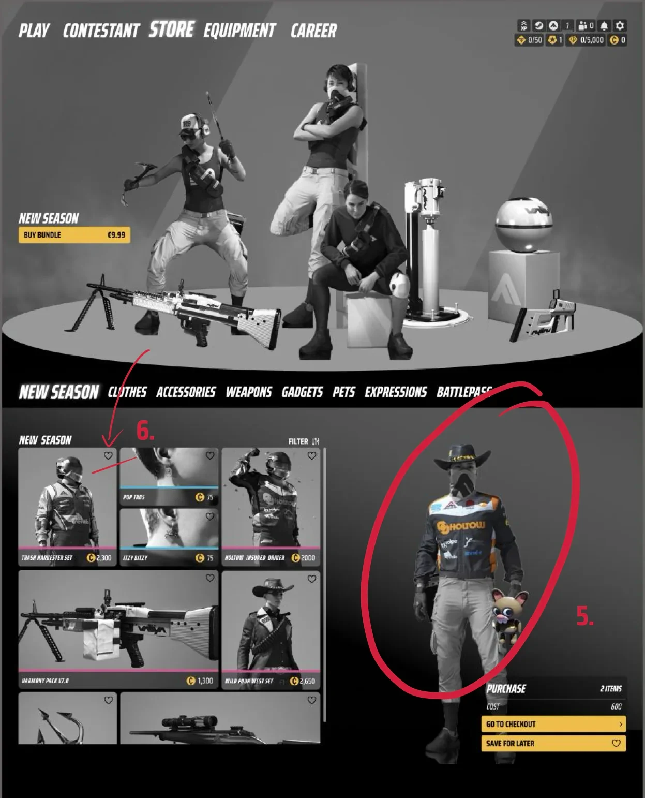
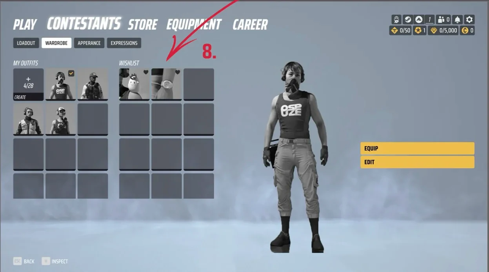
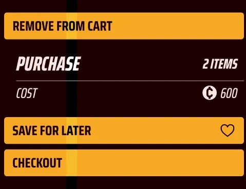
Fewer steps, less scrolling
Body types moved into the Loadout, so body, weapons and playstyle are chosen in one place. “My Outfits” and “Style” merged into a single Wardrobe, with filtering that shows less at once and makes the categories clear.
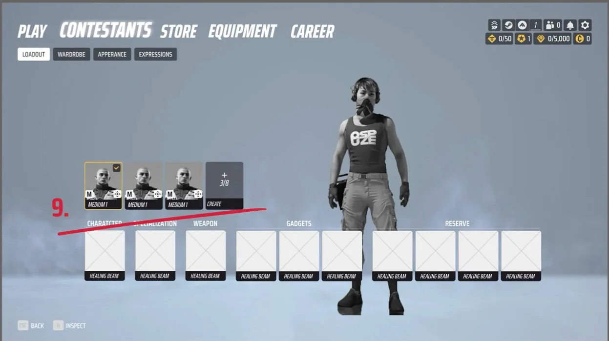
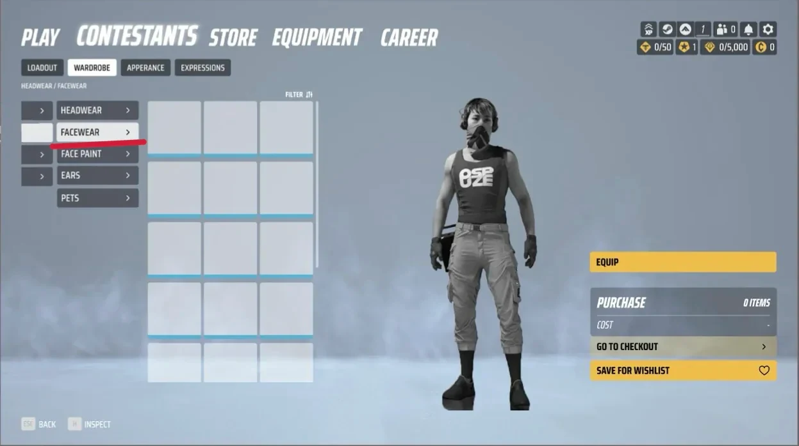
Key learning
The project was completed, and it became clear what the “customer”, the players, wanted: freedom of expression, with the structure, clarity and guidance to avoid overload.
Research and insights carry a lot of weight in a project like this. For me, they clearly shaped how the final design came together. The next step is to add effects and animations that take it to the next level.
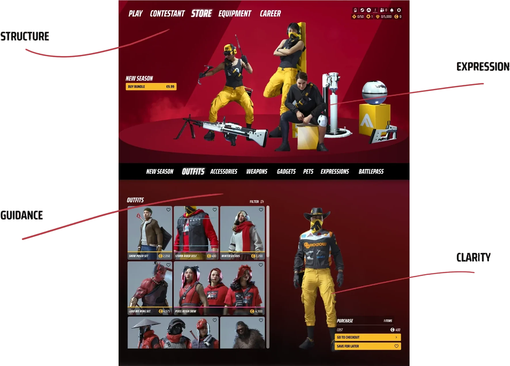
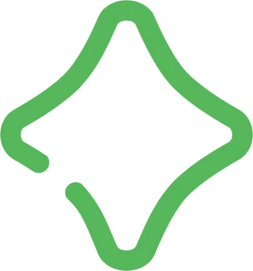